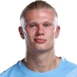

Kto wygra Mistrzostwa Świata 2026? Finał, kursy i prawdopodobieństwo
Wielki finał coraz bliżej: w niedzielę 19 lipca na MetLife Stadium Hiszpania zagra z Argentyną, a w sobotę 18 lipca Francja i Anglia powalczą o trzecie miejsce. Aktualne kursy na mistrza, prawdopodobieństwa i pełna analiza obu meczów.
Decydujące mecze
Kto jest faworytem MŚ 2026?
Faworytem bukmacherów jest Hiszpania: kurs 1,67, około 58,5% szans. Po drugiej stronie jednak Argentyna z kompletem zwycięstw — ten finał jest bardziej otwarty, niż sugeruje kurs.
Kursy na zwycięstwo MŚ 2026
| Reprezentacja | Kurs | Prawdopodobieństwo | ||
|---|---|---|---|---|
1 Hiszpania Hiszpania | 1,67 | 58,5% prawdop. | N1bet 1,67 | |
2 Argentyna Argentyna | 2,35 | 41,5% prawdop. | N1bet 2,35 | |
3 Francja Francja | Odpadła w półfinale | Mecz o 3. miejsce → | ||
4 Anglia Anglia | Odpadła w półfinale | Mecz o 3. miejsce → | ||
5 Brazylia Brazylia | Koniec w 1/8 finału | Odpadła | ||
6 Portugalia Portugalia | Koniec w 1/8 finału | Odpadła | ||
7 Meksyk Meksyk | Koniec w 1/8 finału | Odpadła | ||
Średnie kursy u głównych bukmacherów. Prawdopodobieństwo jest znormalizowane.
Półfinaliści i wielcy przegrani
Kliknij na reprezentację, żeby zobaczyć pełną analizę: droga w turnieju, kurs, prawdopodobieństwo, statystyki i typ.
Terminarz: finał i mecz o 3. miejsce
| Data | Mecz | Runda |
|---|---|---|
| 18/07 | Francja – Inghilterra | Mecz o 3. miejsce |
| 19/07 | Spagna – Argentyna | Finał |
Najlepsi strzelcy turnieju
| # | Zawodnik | Reprezentacja | Gole |
|---|---|---|---|
| 1. |  L. Messi L. Messi | Argentyna | 8 |
| 2. |  Kylian Mbappé Kylian Mbappé | Francja | 8 |
| 3. |  E. Haaland |  Norwegia Norwegia | 7 |
| 4. |  J. Bellingham J. Bellingham | Anglia | 6 |
| 5. |  H. Kane H. Kane | Anglia | 6 |
| 6. |  O. Dembélé O. Dembélé | Francja | 5 |
Jak czytać kursy i prawdopodobieństwo
Kurs dziesiętny mówi, ile dostaniesz za wygraną: im niższy, tym drużyna jest bardziej faworyzowana. Prawdopodobieństwo domyślne = 1 / kurs. Prawdopodobieństwa w tabeli są znormalizowane (usunięta marża bukmachera).
Nasz typ
Hiszpania wchodzi do finału jako faworyt, ale Argentyna wygrała wszystkie siedem meczów. Wszystko rozstrzygnie się 19 lipca — pełną analizę znajdziesz na stronie finału. Graj odpowiedzialnie: kursy są orientacyjne i mogą się zmieniać.
Hiszpania · kurs 1,67Często zadawane pytania
Kto jest faworytem do wygrania Mundialu 2026?
Według kursów faworytem jest Hiszpania (1,67, około 58,5% szans). Jedyną alternatywą jest Argentyna — pozostałe drużyny odpadły.
Kto gra w finale Mundialu 2026?
Hiszpania i Argentyna. Hiszpania pokonała w półfinale Francję 2:0, Argentyna odwróciła losy meczu z Anglią i wygrała 2:1.
Kiedy odbędzie się finał Mundialu 2026?
W niedzielę 19 lipca 2026 na MetLife Stadium w Nowym Jorku/New Jersey, początek o 21:00 czasu polskiego.
Kto zagra o trzecie miejsce?
Francja i Anglia, w sobotę 18 lipca. Stawką jest brąz i Złoty But — Mbappé ma 8 goli, tyle samo co Messi.
Pierwszy mundial w historii z 48 drużynami dotarł do mety. Z całej stawki zostały dwie reprezentacje: Hiszpania i Argentyna zagrają w wielkim finale w niedzielę 19 lipca na MetLife Stadium w rejonie Nowego Jorku i New Jersey — pierwszy gwizdek o 21:00 czasu polskiego. Dzień wcześniej, w sobotę 18 lipca o 23:00 naszego czasu, Francja i Anglia rozstrzygną między sobą mecz o 3. miejsce. Po miesiącu grania pytanie, które elektryzuje kibiców i typerów w Polsce, sprowadza się już do jednego meczu: mistrz Europy czy obrońca tytułu?
Kto jest faworytem finału?
Rynek bukmacherski wskazuje jednego lidera — Hiszpania z kursem 1,67. Przekłada się to na mniej więcej 58% szans według notowań. Argument jest prosty i twardy: żelazna defensywa. Jeden stracony gol w siedmiu meczach, sześć czystych kont i półfinał z najlepszym atakiem turnieju wygrany 2:0 — to fundament, na którym bukmacherzy budują swoją wycenę.
Argentyna z kursem około 2,35 (jakieś 42%) jest jednak wyjątkowym „outsiderem": to obrońca tytułu z kompletem siedmiu zwycięstw w siedmiu meczach i Messim na czele klasyfikacji strzelców. Rynek wycenia tu nie brak klasy, tylko ryzyko starcia z najszczelniejszą obroną imprezy. Różnica kursowa jest mniejsza, niż mogłoby się wydawać — i właśnie dlatego ten finał tak trudno typować.
Kursy na zwycięzcę Mistrzostw Świata 2026
Tabela outright pokazuje aktualne notowania i przeliczone prawdopodobieństwo dla obu finalistów. Pamiętaj: kursy są orientacyjne i mogą się ruszać do samego gwizdka.
| Reprezentacja | Kurs | Prawdopodobieństwo |
|---|---|---|
| Hiszpania | 1,67 | 58,5% |
| Argentyna | 2,35 | 41,5% |
*Kursy aktualizowane na bieżąco — stan przed finałem (19 lipca 2026).*
Na sam mecz (rynek 1X2, wynik po 90 minutach) notowania układają się tak: Hiszpania ok. 2,27 · remis ok. 3,01 · Argentyna ok. 3,49. Zwróć uwagę na różnicę między rynkami: kurs na tytuł Hiszpanii (1,67) jest niższy niż na jej wygraną w 90 minut, bo obejmuje też scenariusz z dogrywką i rzutami karnymi. Rynki na Francję, Anglię i resztę stawki są już zamknięte.
Jak doszło do finału
Półfinały przyniosły dwa zupełnie różne scenariusze. W Dallas 14 lipca Hiszpania rozmontowała Francję 2:0 — rzut karny wykorzystany przez Oyarzabala w 22. minucie ustawił mecz, a Porro w 58. dobił faworyta całego turnieju. Trójkolorowi, którzy do tego wieczoru ani razu nie przegrywali w turnieju, nie znaleźli odpowiedzi na hiszpańskie posiadanie.
Dzień później w Atlancie Argentyna odwróciła losy meczu z Anglią w pięć minut. Anglicy prowadzili od 55. minuty po golu Gordona i widzieli już finał — a wtedy Enzo Fernández wyrównał w 85. minucie, a Lautaro Martínez w 90. przewrócił stadion do góry nogami. 2:1 i obrońcy tytułu zagrają o drugą koronę z rzędu.
Finaliści pod lupą
Hiszpania — mistrz Europy o krok od dubletu ME–MŚ.
- *Atut:* najlepsza defensywa turnieju — bilans 13:1, sześć czystych kont, jedyny stracony gol dopiero w ćwierćfinale z Belgią (2:1). Do tego Oyarzabal z pięcioma trafieniami.
- *Ryzyko:* najskromniejszy dorobek bramkowy w czołówce — gdy mecz się zatnie, La Roja potrafi długo szukać rozwiązania.
- *Kiedy typować:* jeśli wierzysz, że defensywa wygrywa mistrzostwa — kurs 1,67 na tytuł już nie spadnie niżej.
Argentyna — obrońca tytułu z kompletem zwycięstw.
- *Atut:* zwycięski gen w czystej postaci — siedem wygranych w siedmiu meczach, 19 strzelonych goli i Messi w formie: osiem trafień i cztery asysty. Końcówka z Anglią pokazała, że ta drużyna żyje do ostatniego gwizdka.
- *Ryzyko:* siedem straconych goli to najsłabszy wynik defensywny wśród czołowej czwórki — z obroną, która praktycznie nie popełnia błędów, każda strata może być tą decydującą.
- *Kiedy typować:* jako value na obronę tytułu — 2,35 na mistrza świata w komplecie zwycięstw to kurs, obok którego trudno przejść obojętnie.
Mecz o 3. miejsce: Francja – Anglia
Zanim wybrzmi finał, w sobotę 18 lipca o 23:00 czasu polskiego Francja i Anglia zagrają o brąz. Kursy 1X2: Francja ok. 1,87 · remis ok. 3,90 · Anglia ok. 3,79. Bukmacherzy stawiają na Trójkolorowych — przed porażką 0:2 z Hiszpanią mieli komplet sześciu zwycięstw i bilans 16:4.
Ten mecz ma trzy dodatkowe smaczki. Po pierwsze, klasyfikacja strzelców: Mbappé ma osiem goli, dokładnie tyle co Messi — mecz o brąz to jego szansa, by wyprzedzić Argentyńczyka w walce o Złotego Buta, zanim ten wyjdzie na finał. Po drugie, historia: na MŚ 2022 Francja ograła Anglię 2:1 w ćwierćfinale — Synowie Albionu mają rachunek do wyrównania. Po trzecie, Anglia już raz przegrała mecz o 3. miejsce — 0:2 z Belgią w 2018 roku — i drugi raz z rzędu schodzić z podium bez medalu nie zamierza.
Jak czytać kursy i prawdopodobieństwo
Dopiero wchodzisz w typowanie? Podstawa jest prosta. Kurs dziesiętny przeliczysz na prawdopodobieństwo wzorem 1 / kurs. Przykład: kurs 1,67 to 1/1,67 ≈ 0,60, czyli około 60% szans według bukmachera. Kurs 2,35 daje niecałe 43%.
Jest jednak haczyk. Zsumuj przeliczone prawdopodobieństwa obu finalistów, a wyjdzie ci więcej niż 100%. Ta „nadwyżka" to marża bukmachera — wbudowany narzut, dzięki któremu operator zarabia niezależnie od wyniku. Dlatego realne szanse każdej kadry są odrobinę niższe, niż sugeruje surowe przeliczenie. Warto też porównać notowania u kilku legalnych w Polsce operatorów (np. STS, Fortuna, Superbet), bo różnice na finał mundialu bywają zauważalne, a przy większej stawce w PLN to robi różnicę.
Porównaj kursy przed postawieniem kuponu — najlepszy kurs na tę samą kadrę bywa u innego bukmachera, niż myślisz.
Nasz typ na finał
Trzymając się chłodnej analizy: rynek ma mocne argumenty. Hiszpania przeszła przez turniej, tracąc jednego gola, a w półfinale zdjęła z planszy najgroźniejszy atak imprezy. Drużyna, która nie daje rywalom strzelać, w meczach o wszystko ma naturalną przewagę — kurs 1,67 na tytuł wygląda uczciwie.
Ale jest druga strona medalu. Argentyna wygrała na tym mundialu wszystko, co było do wygrania — siedem meczów, w tym półfinał odwrócony w pięć minut. Messi z ośmioma golami i czterema asystami ciągnie zespół, który psychicznie nie przegrywa nigdy. Kurs 2,35 na obrońcę tytułu w takiej formie to najciekawsze value tej imprezy. A jeśli szukasz kursu wyżej — remis po 90 minutach (ok. 3,01) w meczu dwóch tak wyrównanych ekip wcale nie jest scenariuszem z kosmosu.
Żaden typ nie daje gwarancji — obstawiaj na chłodno, w ramach budżetu, który akceptujesz. Zakłady tylko dla osób 18+.